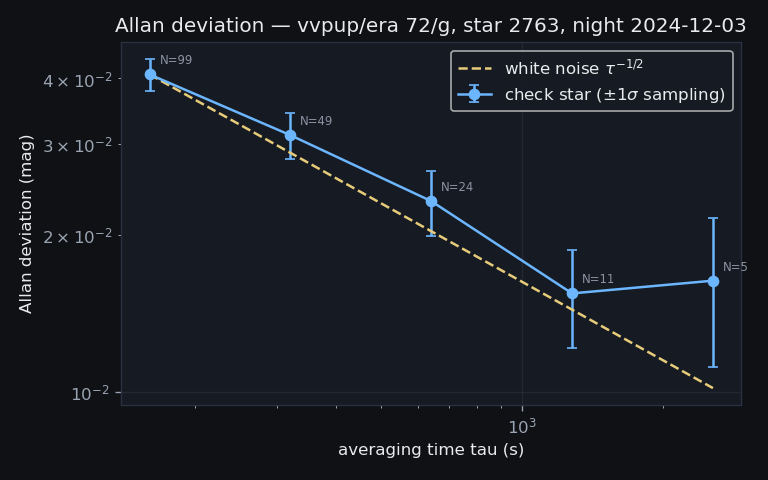
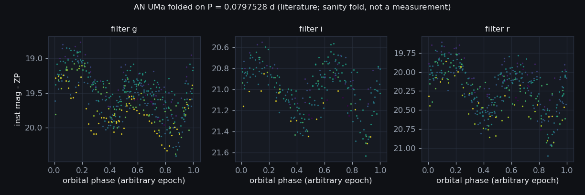

S4 — Ensemble Photometry Prototype (AN UMa & VV Pup)
2,333 of 2,558 frames measured & star-matched
without a WCS · 10 Honeycutt ensembles over
5,044 stars · Gaia-anchored · empirical error
model (S5 seed) ·
built 2026-08-18T09:06Z
(S4 v1.0 (2026-08-17),
commit c930015-dirty)
· the front page
1 · Frame selection & provenance
server-reduced pixels only — one provenance per seriesQuestion
Which frames may the photometry prototype touch, and under what provenance rule?
Evidence
| target | era | raw canonical light frames | with reduced counterpart | selected |
|---|---|---|---|---|
| anuma | 76 | 1,279 | 1,279 | 1,279 |
| vvpup | 72 | 558 | 558 | 558 |
| vvpup | 76 | 795 | 721 | 721 |
| frame status | frames |
|---|---|
matched | 2,333 |
skipped_pointing | 159 |
failed_match:MaxIterError | 57 |
failed_match:ValueError | 9 |
Decision
raw_reduced_links
(2,558 of 2,632 raw frames; 2,558 selected), and
reduction provenances are never mixed within a (target, era) series
(decision 2026-08-18). Frames without a reduced counterpart are
counted in the ledger above and excluded — when S2 delivers our own
master-calibrated reductions, they rejoin as a NEW provenance series, not
as patches to this one.Consequence
Every downstream number in this report descends from exactly these frames; the ledger row that excludes a night is the audit trail for its absence from the light curves.
2 · Star matching without a WCS
astroalign triangles → one reference per (target, era)Question
Most polar frames are unsolved (73–95% of the Sloan
series carry pltsolvd=0 — S1’s future business). Can
stars be matched across thousands of frames using GEOMETRY alone?
Evidence

| target | era | reference frame | night | ref stars | FWHM px | plate scale "/px | match tol px | paired-star frac | doubled candidates rejected | frames matched |
|---|---|---|---|---|---|---|---|---|---|---|
| anuma | 76 | 139,628 | 2025-04-30 | 461 | 3.49 | 0.4491 | 2.79 | 0.007 | 0 | 1,114 |
| vvpup | 72 | 123,011 | 2024-12-06 | 3,301 | 2.75 | 0.8062 | 2.20 | 0.045 | 9 | 548 |
| vvpup | 76 | 130,659 | 2025-02-22 | 5,166 | 3.61 | 0.4491 | 2.89 | 0.051 | 2 | 671 |
| target | night | failed frames | S0 pointing offset (deg) | failure |
|---|---|---|---|---|
| anuma | 2025-04-22 | 147 | 10.92 | skipped_pointing |
| anuma | 2025-03-28 | 14 | 0.12 | failed_match:MaxIterError,failed_match:ValueError |
| vvpup | 2025-04-15 | 9 | 23.13 | failed_match:MaxIterError,skipped_pointing |
| vvpup | 2025-04-17 | 9 | 14.25 | failed_match:MaxIterError,skipped_pointing |
| vvpup | 2025-04-21 | 9 | 0.11 | failed_match:MaxIterError |
| vvpup | 2025-04-12 | 8 | 0.18 | failed_match:MaxIterError |
| vvpup | 2024-12-06 | 7 | 0.09 | failed_match:MaxIterError |
| vvpup | 2025-03-02 | 5 | 0.07 | failed_match:ValueError,failed_match:MaxIterError |
| anuma | 2025-03-04 | 4 | 112.66 | skipped_pointing |
| vvpup | 2025-04-20 | 4 | 0.13 | failed_match:MaxIterError |
Decision
seeded_ransac), so every transform and star identity
reproduces bit-for-bit on re-run. Frames that cannot produce
8 detections or defeat the triangle fit are marked
failed_match, counted, and excluded — never force-fitted.Consequence
Every detection now carries a star id (or none), so the ensemble below is a pure database join — no pixel is touched again.
3 · The Honeycutt ensemble
robust ZP per frame + mean mag per star, per (target, era, filter)Question
With no photometric nights guaranteed and clouds in the data, how does every frame get a zero point it can defend?
Evidence

| target | era | filter | frames | comps | checks | dropped variable | iterations | converged | comp RMS med (mag) | ZP spread (mag) |
|---|---|---|---|---|---|---|---|---|---|---|
| anuma | 76 | g | 449 | 113 | 4 | 10 | 21 | yes | 0.0297 | 0.733 |
| anuma | 76 | i | 257 | 111 | 4 | 38 | 12 | yes | 0.0284 | 0.081 |
| anuma | 76 | r | 408 | 125 | 4 | 14 | 18 | yes | 0.0329 | 0.720 |
| vvpup | 72 | empty | 76 | 1,288 | 4 | 131 | 12 | yes | 0.0243 | 0.110 |
| vvpup | 72 | g | 196 | 1,825 | 4 | 383 | 12 | yes | 0.0346 | 0.337 |
| vvpup | 72 | i | 87 | 2,262 | 4 | 292 | 12 | yes | 0.0455 | 0.047 |
| vvpup | 72 | r | 189 | 1,919 | 4 | 388 | 12 | yes | 0.0358 | 0.368 |
| vvpup | 76 | g | 387 | 2,660 | 4 | 367 | 18 | yes | 0.0353 | 0.674 |
| vvpup | 76 | i | 116 | 1,803 | 4 | 159 | 21 | yes | 0.0383 | 0.994 |
| vvpup | 76 | r | 168 | 2,509 | 4 | 369 | 18 | yes | 0.0337 | 0.801 |
Decision
Consequence
Every frame carries zp ± zp_err and every star a mean magnitude + RMS + χ² — the raw material of both the light curves (section 6) and the error model (section 5).
4 · The Gaia DR3 anchor
identity + geometry check + an honest offset, not absolute calQuestion
What ties these WCS-free pixel catalogs to the sky — and how far toward absolute photometry does that tie honestly reach?
Evidence
| target | era | status | parity | fitted scale "/px | header scale "/px | rotation deg | Gaia stars | matched | target star id | target offset " | coords via |
|---|---|---|---|---|---|---|---|---|---|---|---|
| anuma | 76 | ok | direct | 0.4509 | 0.4491 | 0.47 | 581 | 213 | 291 | 1.11 | simbad |
| vvpup | 72 | ok | direct | 0.8095 | 0.8062 | -155.58 | 2,000 | 897 | 1,516 | 1.77 | simbad |
| vvpup | 76 | ok | direct | 0.4511 | 0.4491 | 0.67 | 2,000 | 750 | 2,700 | 1.87 | simbad |
The fitted similarity scale is measured from the SKY and agrees with the header plate scale — an independent check of the XPIXSZ/FOCALLEN cards that no header can fake. Zero-point offsets per series (comparison stars with Gaia G only):
| target | era | filter | median (G - ensemble) mag | scatter (MAD) mag | stars | zero-point status |
|---|---|---|---|---|---|---|
| anuma | 76 | g | -3.351 | 0.256 | 102 | gaia_median_offset |
| anuma | 76 | i | -4.061 | 0.167 | 99 | gaia_median_offset |
| anuma | 76 | r | -3.509 | 0.038 | 113 | gaia_median_offset |
| vvpup | 72 | empty | -3.073 | 0.157 | 771 | gaia_median_offset |
| vvpup | 72 | g | -2.909 | 0.153 | 760 | gaia_median_offset |
| vvpup | 72 | i | -3.183 | 0.133 | 760 | gaia_median_offset |
| vvpup | 72 | r | -2.770 | 0.056 | 756 | gaia_median_offset |
| vvpup | 76 | g | -3.207 | 0.166 | 659 | gaia_median_offset |
| vvpup | 76 | i | -4.601 | 0.142 | 650 | gaia_median_offset |
| vvpup | 76 | r | -3.519 | 0.049 | 664 | gaia_median_offset |
Decision
Consequence
Every ensemble star is now a named Gaia source; the target star’s identity is fixed by coordinates (simbad), so the light curves in section 6 are attached to AN UMa and VV Pup by astrometry, not by hope.
5 · The empirical error model (S5 seed)
check stars only — the target never grades its own errorsQuestion
Are the formal error bars TRUE? Both targets are polars whose modulation is signal, so the question is answered entirely by field CHECK stars held out of the ensemble solve.
Evidence

| era | filter | check stars | best check RMS (mmag) | median check RMS (mmag) | median χ²ν | inflation factor |
|---|---|---|---|---|---|---|
| 72 | empty | 4 | 42.4 | 53.4 | 1.26 | 1.12 |
| 72 | g | 4 | 42.9 | 55.1 | 2.73 | 1.65 |
| 72 | i | 4 | 64.5 | 81.0 | 1.82 | 1.35 |
| 72 | r | 4 | 53.1 | 63.3 | 1.98 | 1.41 |
| 76 | g | 8 | 15.2 | 26.3 | 3.12 | 1.77 |
| 76 | i | 8 | 42.0 | 61.5 | 0.87 | 0.93 |
| 76 | r | 8 | 28.6 | 34.7 | 0.82 | 0.91 |
{kind=link}

Decision
Consequence
S5 inherits these numbers as priors; October’s new frames extend the same tables by re-running this build.
6 · Light-curve sanity — pipeline evidence, not science
AN UMa is a polar: its modulation is EXPECTED signalQuestion
Does the assembled machinery produce a light curve a CV astronomer recognizes?
Evidence

{kind=link}

Decision
macro_phot.report_s4; nothing here measures a period.Consequence
The prototype closes S4’s core loop: pixels → matched stars → defensible zero points → validated errors → a target light curve with named comparison stars. Scaling to the remaining CV targets is a worklist change, not a code change.